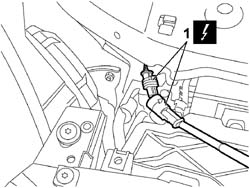
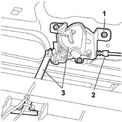

7025A34 BONNET LID LOCK (ONE) - R+R OR REPAIR
- Path
- Procedures > 70 FITTINGS > 7025 COMPARTMENT COVERS > 7025A BONNET LID > 7025A34 BONNET LID LOCK (ONE) - R+R OR REPAIR
- Kind
- repair procedure (removal / refitting; the operation number is the code)
- Applies to
- all engines; all production periods
- Interactive page
- https://sloeber94.github.io/elrnDB-fCrm/en/#/194000962
Applies to: all engines; all production periods
 Removing
Removing
 Refitting
Refitting- Open the bonnet.
- Turn the ignition key to the OFF position.
- Disconnect the negative battery terminal.
Description | Connector | |
|---|---|---|
BATTERY |
Op. 7040D30 ENGINE BAY FRONT BEAM COVER - R R
1. Prise the wiring out of the anchorages and disconnect the boot open indication switch electrical connection.
Description | Connector | |
|---|---|---|
1 | BONNET OPEN SWITCH |

Applies to: all engines; all production periods
1. Unscrew the nuts and detach the lock.
2. Disconnect the bonnet release cable from the lock.
3. Remove the lock complete with opening device.

Applies to: all engines; all production periods
Refitting
Removing- Check that the lock components are not damaged.
- Connect the bonnet release cable to the lock.
- Position the lock in its seat.
- Screw in the nuts without tightening them.
- Connect the electrical connection of the boot open indicator switch and fit the anchorages.
Description | Connector | |
|---|---|---|
BONNET OPEN SWITCH |
Op. 7025A10 BONNET LID - ALIGNMENT
Op. 7040D30 ENGINE BAY FRONT BEAM COVER - R R
- Connect the negative battery terminal.
Description | Connector | |
|---|---|---|
BATTERY |
Topics linked from this page (4)
- 7025A10 BONNET LID - ALIGNMENT
- 7040D30 ENGINE BAY FRONT BEAM COVER - R R
- A001 BATTERY
- I010 BONNET RELEASE SWITCH